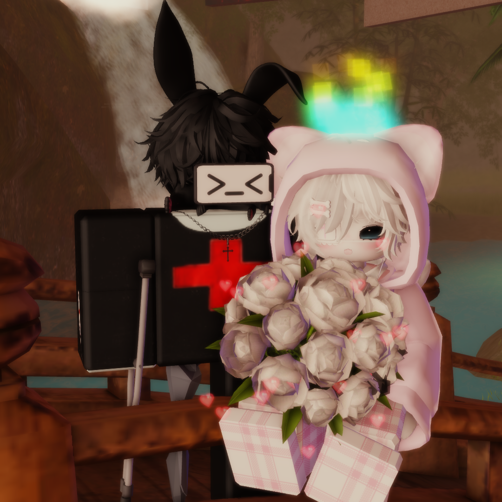
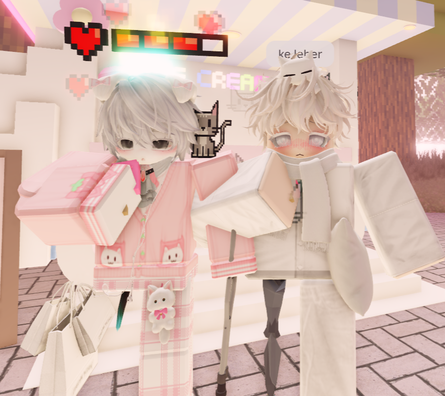
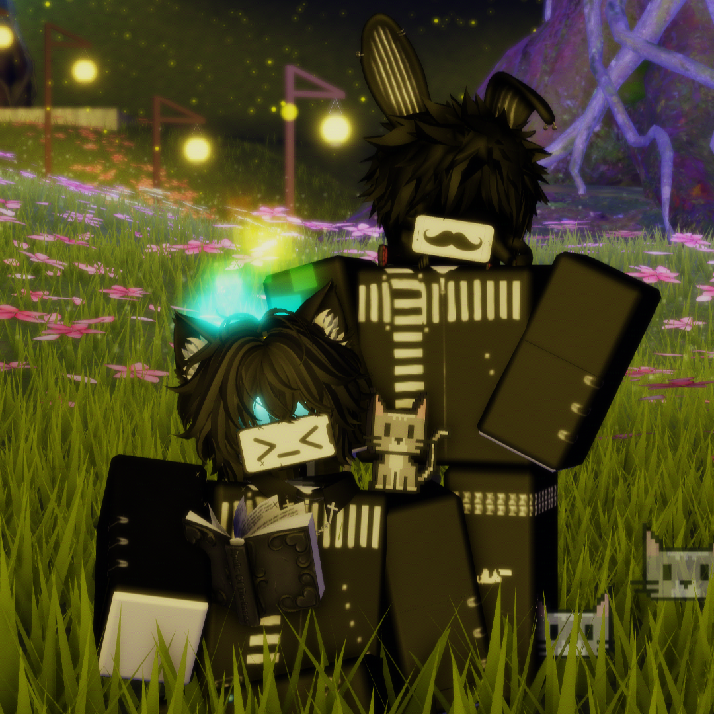

You Are Enough.
Aku harap kamu inget satu hal ini terus. Kamu gak perlu jadi orang lain supaya pantas dicintai. Kamu, dengan semua cerita, ketakutan, kekurangan, dan kebaikan yang kamu punya, udah lebih dari cukup buat aku.
someone left u this web.
Aku bikin halaman kecil ini pelan-pelan. Bukan yang paling sempurna, tapi dibuat khusus biar kamu senyum.

i didn't know i was missing something, until i met you.
message notes
Aku harap kamu inget satu hal ini terus. Kamu gak perlu jadi orang lain supaya pantas dicintai. Kamu, dengan semua cerita, ketakutan, kekurangan, dan kebaikan yang kamu punya, udah lebih dari cukup buat aku.
Kamu sering nanya, "yakin sama aku?" Jawabanku masih tetap sama. Iya, aku yakin. Aku milih kamu bukan karena aku berharap semuanya bakal sempurna. Aku milih kamu karena aku tau, di balik semua ketakutan, overthinking, dan cara kamu yang selalu mikir jauh ke depan, ada seseorang yang tulus banget dalam menyayangi orang-orang yang dia sayang. Dan aku bangga bisa jadi salah satunya. I love you, always. <3
Semoga suatu hari nanti, kamu bisa melihat diri kamu lewat cara aku melihat kamu. Mungkin saat itu kamu bakal sadar kalau ternyata kamu jauh lebih berharga daripada yang selama ini kamu kira.
little reminder
It's okay to slow down. You don't have to carry everything by yourself. Rest when you need to, breathe a little deeper, and remember that I'm always here, quietly cheering you on.
our tiny gallery
because some memories deserve forever.



surat kecil
🇮🇩
Terima kasih ya udah hadir di hidup aku.
Ada satu hal yang pengen banget aku sampein ke kamu.
Dari awal, aku gak pernah berekspektasi kamu harus jadi sosok yang sempurna, atau harus memenuhi semua hal yang ada di bayangan aku tentang sebuah hubungan.
Jadi, tolong jangan langsung nyalahin diri sendiri atau ngerasa gagal setiap kali kamu merasa gak bisa ngasih apa yang menurut kamu aku harapkan.
Buat aku, hubungan ini bukan tentang daftar yang harus dicentang satu per satu.
Yang aku pengenin dari awal cuma satu: kamu.
Kamu gak perlu berubah jadi orang lain supaya aku tetap milih kamu.
Kamu juga gak perlu maksa diri buat jadi pasangan yang "sempurna".
Cukup jadi Sunday yang aku kenal.
Sunday yang kadang overthinking, yang suka mikir jauh ke depan, yang selalu berusaha menjaga orang-orang yang dia sayang, bahkan yang sering minta maaf untuk hal-hal yang sebenarnya bukan salahnya.
Semua itu adalah bagian dari diri kamu.
Dan justru itu yang aku sayang.
Jadi kalau suatu hari nanti kamu ngerasa belum bisa merealisasikan semua keinginan yang mungkin aku punya, jangan langsung berpikir kalau kamu kurang.
Karena dari awal, aku gak pernah minta kamu jadi siapa-siapa selain diri kamu sendiri.
Selama kamu tetap jadi Sunday, itu udah lebih dari cukup buat aku.
Aku gak mencintai versi kamu yang sempurna.
Aku mencintai kamu, apa adanya.
🇬🇧
Thank you for being part of my life.
There's something I've always wanted you to know.
From the very beginning, I never expected you to be perfect or to live up to every picture I might have had of what a relationship should look like.
So please, don't be too hard on yourself whenever you feel like you can't give me everything you think I deserve.
To me, love isn't about checking every box.
It's never been about that.
The only thing I've ever truly wanted is you.
You don't have to become someone else for me to keep choosing you.
And you never have to force yourself to be the "perfect" partner.
Just be the Sunday I know.
The one who overthinks sometimes, who always plans ahead, who cares deeply for the people he loves, and who apologizes even when he doesn't need to.
Those are the pieces that make you... you.
And those are exactly the reasons I love you.
If one day you feel like you can't make every little dream or expectation come true, please don't think that means you're not enough.
Because I never fell in love with an ideal version of you.
I fell in love with Sunday.
Exactly as you are.
Aku sayang kamu lebih dari yang bisa web kecil ini tulis.